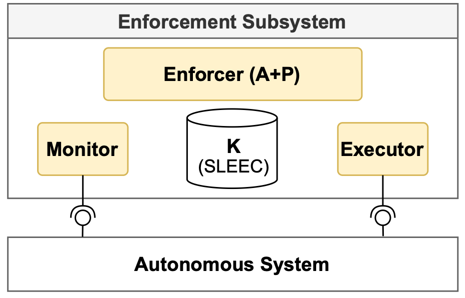

SLEEC@run.time - Ethics Assurance Process
Ethics Assurance Process
The ethics assurance process that spans from the elicitation of ethics requirements to their operational enforcement at runtime. The process centers around executable SLEEC rules (social, legal, ethical, empathetic, cultural) expressed as an Abstract State Machine (ASM) runtime model, which is used by an enforcement subsystem to compute and apply obligations dynamically.

This page summarizes the four main phases described in the paper. For the full text and formal details, see the accepted SEAMS'26 paper linked above.
The Four Phases
The process unfolds across four main phases. The first three phases occur at design time, while the fourth phase operates at runtime:
- Rule elicitation (design time)
Identify high-level ethical norms and translate them into preliminary SLEEC rules. This involves interdisciplinary stakeholders (ethicists, lawyers, engineers) to derive actionable rules tailored to system capabilities and the application context.
- Rule formal specification and analysis (design
time)
Formalize the elicited SLEEC rules using an executable formalism. In the paper, Abstract State Machines (ASM) and the ASMETA toolset are used to produce an executable runtime model and to run V&V analyses (animation, validation, verification) that check consistency, conflicts, timing feasibility, and coverage.
- Enforcement Subsystem development (design
time)
Implement an Enforcement Subsystem — an autonomic manager wrapping the target system (MAPE-K architecture) that hosts the SLEEC runtime model and interfaces with Monitor and Executor components to realize enforcement.
- Enforcement Subsystem operation (run time)
Deploy the Enforcement Subsystem connected to the autonomous system. The Monitor translates sensor data into predicates; the Enforcer executes the ASM runtime model (ASMETA) to compute obligations; the Executor translates obligations into concrete actions sent to the system.
The lifecycle is sequential but supports reassessment and refinement: signals emerging at any phase can trigger rule evolution. Updated runtime models are uploaded to the running subsystem so enforcement evolves with the ruleset.
Rule elicitation process
Elicitation starts from high-level moral principles (e.g., benevolence, non-maleficence, autonomy) and maps them to system capabilities to identify touchpoints where base rules are needed. Rules can include hedge clauses (UNLESS ... IN WHICH CASE ...) to represent prioritized exceptions and defeaters.
SLEEC rule pattern
WHEN C0 THEN O0
UNLESS C1 IN WHICH CASE O1
UNLESS C2 IN WHICH CASE O2
Hedge clauses are evaluated top-down; the order implies their priority (the last true hedge takes precedence).
Formal specification and analysis
The paper adopts ASMs and the ASMETA toolset to encode SLEEC rules in an executable form (AsmetaL). This choice enables both rigorous analysis and direct runtime execution of the same model used for enforcement.
// Example (ASMETA excerpt) rule r_SLEEC($c0, $o0, $c1, $o1, $c2, $o2) = if $c0 and not $c1 then $o0 else if $c0 and $c1 and not $c2 then $o1 else if $c0 and $c1 and $c2 then $o2 endif endif endif
The formal model supports model animation and V&V; results guide stakeholders in refining the ruleset.
Enforcement Subsystem (high-level)
The Enforcement Subsystem implements a distributed MAPE-K loop across three main components: Monitor, Enforcer, and Executor, sharing a SLEEC knowledge base (the ASM runtime model).

- Monitor: extracts higher-level conditions from sensor data.
- Enforcer: runs the ASM runtime model (ASMETA) to compute obligations (Analyze & Plan).
- Executor: maps obligations to concrete commands sent to the target system.
Operation and Evolution
During operation, the Enforcer executes the uploaded SLEEC runtime model whenever monitored conditions change, producing obligations that the Executor applies. Rule reassessment is supported: evolved runtime models can be uploaded to the running subsystem so enforcement adapts with the ruleset.
Cite us!
Please cite as:
Martina De Sanctis, Gianluca Filippone, Paola Inverardi, Raffaela Mirandola,
Sara Pettinari, and Patrizia Scandurra. “A Process to Enforce Ethical Requirements
of Autonomous Systems at Runtime”. 21th Symposium on Software Engineering for Adaptive and Self-Managing Systems (SEAMS). IEEE, 2026.
or use the following BibTeX entry:
@inproceedings{DeSanctisFIMPS2026,
author = {Martina {De Sanctis} and Gianluca Filippone
and Paola Inverardi and Raffaela Mirandola
and Sara Pettinari and Patrizia Scandurra},
title = {A Process to Enforce Ethical Requirements of Autonomous Systems at Runtime},
booktitle = {21st {IEEE/ACM} Symposium on Software Engineering for Adaptive and
Self-Managing Systems, SEAMS@ICSE 2026},
pages = {},
publisher = {{IEEE}},
year = {2026},
url = {https://doi.org/10.1145/3788550.3794876}
}